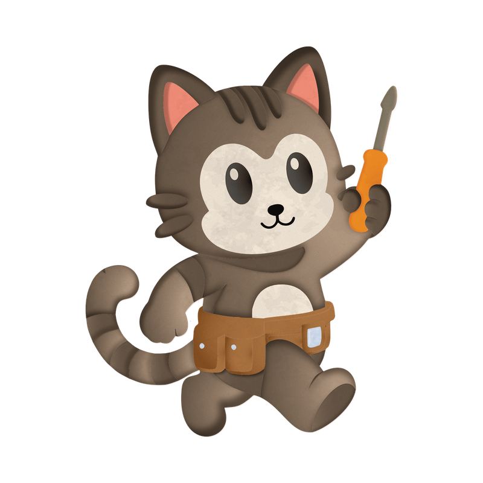
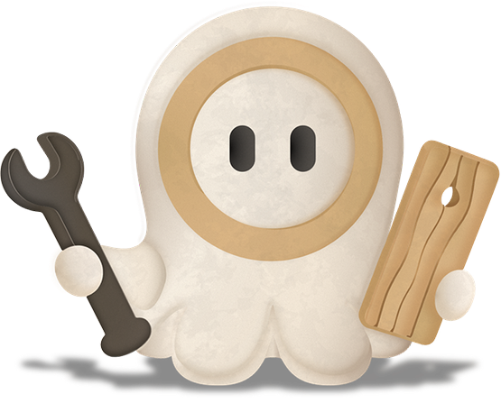

Felix
control
Every tool by hand. Nothing happens that you did not ask for.
downloadable app is to
be launched soon

link to the website >> https://modugamified.vercel.app
a gamified companion app that turns a chaotic paper manual into one step, one part, one calm decision at a time virtual furniture 3D assembly — personalised in real time to how your mind processes a build, not a generic average of everyone’s. Today it guides builds of pieces modelled on IKEA furniture, and the same approach works for any furniture brand, so the team is now looking for furniture businesses to partner with. I led interaction & interface design, UX research and information architecture on this project, and built the frontend alongside the team’s developers.
Why gamified? Long, fiddly builds are easy to abandon half-finished, and research links early, frequent rewards to staying engaged. So every finished build in MODU earns XP (experience) and coins, then moves into a 3D isometric room user arranges in their own way. Users can add friends, visit their rooms and leave impressions, so a finished build is something one can show, not just keep.
the users are
people with cognitive struggles associated with ADHD, Autism (ASD/AuDHD), Dyslexia and Dyspraxia — plus first-time assemblers of any kind, who hit the same walls without a diagnosis behind them
they encounter
overwhelming manuals that assume perfect working memory, perfect spatial rotation and zero sensory friction: unlabelled identical screws, ambiguous hole orientation, cluttered diagrams, no room to stop and recover mid-task
confirmed by
I confirmed this with a literature review across 5 cognitive profiles (ADHD, ASD, AuDHD, Dyslexia, Dyspraxia/DCD) mapped directly onto assembly-specific failure points, plus independent user complaints sourced from IKEA manual criticism threads
and the wider case for solving it
over 85% of trials on gamified learning show positive results for neurodivergent learners — so the gamification is the method, not decoration
i/ non-diagnostic personalization
I designed onboarding so MODU never asks a user to name a condition. A 5-question, non-clinical onboarding quiz — “how do you feel opening a box of parts?”, “what keeps you focused while gaming?”, etc. — reads behaviour, not labels, and routes each answer to one of four support modes.
ii/ 4 modes

control
Every tool by hand. Nothing happens that you did not ask for.
visual
Shown before told. Each step demonstrates itself first.
momentum
Keeps you moving. Short steps, quick wins, no dead air.
clear path
One step highlighted at a time, named precisely, in order.
iii/ gamification & rewards
Three rules for the reward system were set:
no punishment for failure: a wrong piece gets a gentle hint & never a progress or currency penalty
no time pressure: no countdowns, no speed scoring. XP and coins reward completion, not speed
multimodal confirmation: every mistake and every success is signalled through at least two channels at once (visual + haptic, or audio + visual)
iv/ the room as a homescreen
I designed the room as the app’s homescreen — assembly may be an overwhelming task & the room is the reason to come back. Every finished build drags into a space the user furnishes, decorates and shows to friends. the app’s front door is a payoff screen (room), not a demanding one (catalogue of furniture to assemble)
i/ information architecture
I mapped the full information architecture below:
ii/ user interaction flow
I planned the interaction flow across four stages:
iii/ wireframing UI
I drafted and iterated the UI, from low-fidelity through to high-fidelity:
40+
low-fidelity wireframes drafted to map every interaction scenario before a single visual decision was made
40+
high-fidelity variations built from those drafts, across five iteration rounds
5
full design-iteration passes, driven by teammate + user-testing feedback, not aesthetic preference alone
iv/ some accessibility highlights
as the team’s accessibility checker, here’s what I made sure of:
Our team ran moderated, in-person user testing, with results measured against the traditional paper manual:
25+
participants, including neurodivergent users (ADHD, ASD, dyslexia, dyspraxia) and neurotypical testers from a public showcase & individual user testing sessions
100%
rated MODU more useful than a traditional furniture-assembly manual
90%
completed their tasks with no navigation or usability issues